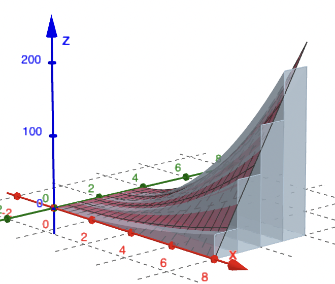
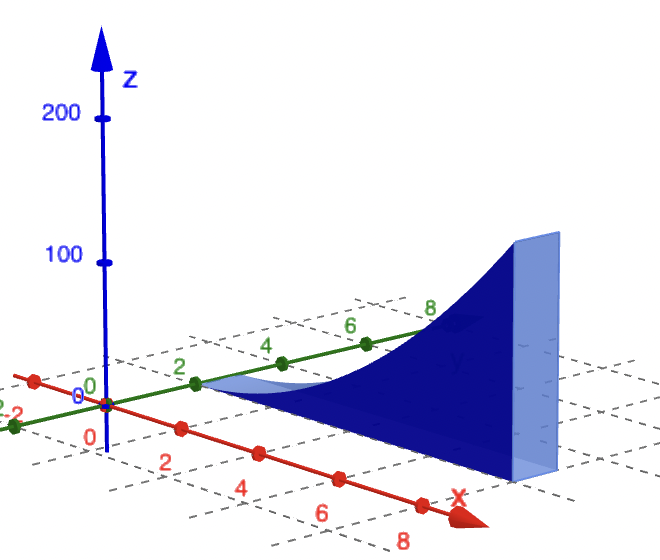
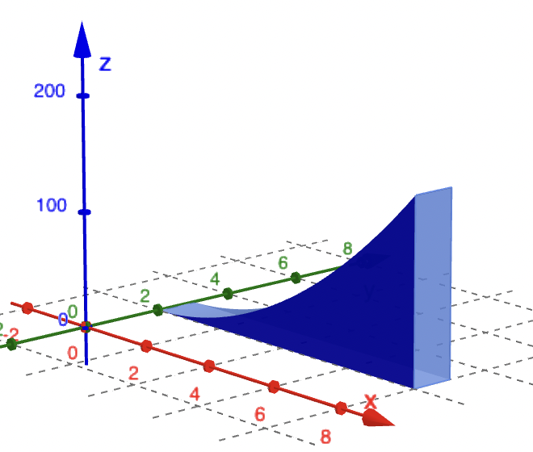
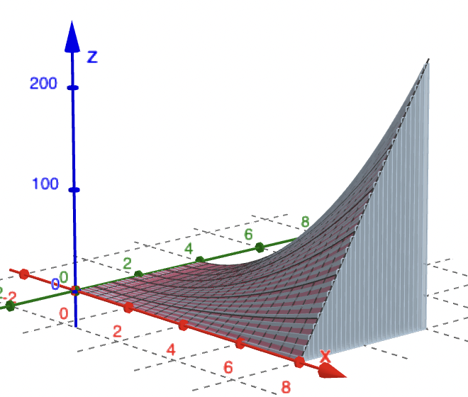

Calculus &
Linear Algebra II
Chapter 24
24 Fubini's theorem, volume by slabs
By the end of this section, you should be able to answer the following questions:
- What is Fubini's theorem?
- How is the double integral related to the iterated integral?
- How do you estimate the volume below a surface using slabs?
24.1 Fubini's theorem
If $f(x,y)$ is integrable on the rectangle \[ R = \left\{ (x,y)~|~a\leq x\leq b, c\leq y\leq d \right\}, \] then
$\displaystyle \iint_R f(x,y)~ dA = \int_a^b \int_c^d f(x,y) ~dy~dx$
$\displaystyle \qquad \qquad \;\;\;= \int_c^d \int_a^b f(x,y) ~dx~dy$
24.1 Fubini's theorem
24.2 Example: evaluate ${\small \iint_R \left(x^2+y^2\right)dA}$
where $R = \left\{ (x,y)~|~0\leq x\leq 2, 0\leq y\leq 1 \right\}$
| $I $ | $= \displaystyle \int_{x=0}^{x=2} \left[ \int_{y=0}^{y=1} \left(x^2+y^2\right)dy \right]dx $ |
| $ = \displaystyle \int_0^2 \left[ \left( x^2 y + \frac{y^3}{3} \right) \Bigg|_{y=0}^{y=1} \right] dx$ | |
| $= \displaystyle \int_0^2 \left[ x^2 (1) + \frac{(1)^3}{3} - \left(x^2 (0) + x^2 \frac{(0)^3}{3}\right) \right]dx$ | |
| $= \displaystyle \int_0^2 \left( x^2+\frac{1}{3} \right) dx$ $= \displaystyle \left( \frac{x^3}{3}+\frac{1}{3}x \right)\Bigg|_{x=0}^{x=2}$ $= \displaystyle \frac{10}{3}.$ |
24.2 Example (cont.):
by Fubini's theorem
| $I$ | $= \displaystyle \int_{y=0}^{y=1} \left[ \int_{x=0}^{x=2} \left(x^2+y^2\right)dx \right]dy $ |
| $ = \displaystyle \int_0^1 \left[ \left( \frac{x^3}{3} + y^2x \right) \Bigg|_{x=0}^{x=2} \right] dy$ | |
| $= \displaystyle \int_0^1 \left[ \frac{(2)^3}{3} + y^2(2) - \left(\frac{(0)^3}{3} + y^2(0)\right) \right]dy$ | |
| $= \displaystyle \int_0^1 \left( \frac{8}{3} + 2y^2 \right) dy$ $= \displaystyle \left( \frac{8}{3}y + 2\frac{y^3}{3} \right)\Bigg|_{y=0}^{y=1}$ $= \displaystyle \frac{10}{3}.$ |
24.2 Example (cont.):
A representation of the volume in example 24.2.
24.3 Special case when $f(x,y)= g(x)h(y)$.
In this case we can separate the integral as follows
$\displaystyle \iint_R f(x,y)~ dA = \int_c^d \int_a^b g(x)h(y) ~dx~dy$
$\displaystyle \qquad \qquad\quad= \int_a^b g(x)~dx \int_c^d h(y) ~dy.$
24.3.1 Example:
$\displaystyle {\small \displaystyle \iint_R \sin x \cos y~dA}\,$ where $\,R = \left[ 0, \dfrac{\pi}{2} \right]\times \left[ 0, \dfrac{\pi}{2} \right]$
| $\displaystyle \iint_R \sin x \cos y~dA $ | $\displaystyle = \left(\int_{x=0}^{x=\pi/2} \sin x ~dx\right) \left( \int_{y=0}^{y=\pi/2} \cos y~dy \right) $ |
| $\displaystyle = \left( -\cos x\Bigg|_{x=0}^{x=\pi/2} \right) \left( \sin y \Bigg|_{y=0}^{y=\pi/2} \right)$ | |
| $= 1. $ |
24.4 Non-rectangular region
To define a double integral over a non-rectangular region $D$, we consider a rectangular $R$ which encloses $D$ and define \[ F(x,y) = \left\{ \begin{array}{rl} f(x,y) & \text{if }(x,y)\in D\\ 0, &\text{if }(x,y)\in R \text{ but } \notin D \end{array} \right. \]
Then we can define the double integral of $f(x,y)$ over $D$ by \[ \iint_D f(x,y) dA= \iint_R F(x,y)dA \]
24.4 Non-rectangular region
Then we can define the double integral of $f(x,y)$ over $D$ by \[ \iint_D f(x,y) dA= \iint_R F(x,y)dA \]
and proceed as before:
- Chop $R$ into subrectangles,
- Compute $F(x^*,y^*)\Delta A$ for each rectangle contained in $R,$
- Add up the contributions from all subrectangles, and
- Take a limit as we chop $R$ into smaller and smaller pieces.
24.4 Non-rectangular region
We obtain
$\displaystyle \iint_D f(x,y) ~dA = \iint_R F(x,y)~dA$
$\qquad \qquad \quad \;\; \displaystyle =\lim_{\Delta A\to 0} \sum_{\text{subrectangles in }R}F\left(x^*,y^*\right)\Delta A$
$\qquad \qquad \quad \;\; \displaystyle =\lim_{\Delta A\to 0} \sum_{\text{subrectangles in }D}f\left(x^*,y^*\right)\Delta A \,\quad$
However, this does not really tell us how to compute the double integral over $D.$ 😥
24.4 Non-rectangular region
We obtain
$\displaystyle \iint_D f(x,y) ~dA = \iint_R F(x,y)~dA$
$\qquad \qquad \quad \;\; \displaystyle =\lim_{\Delta A\to 0} \sum_{\text{subrectangles in }R}F\left(x^*,y^*\right)\Delta A$
$\qquad \qquad \quad \;\; \displaystyle =\lim_{\Delta A\to 0} \sum_{\text{subrectangles in }D}f\left(x^*,y^*\right)\Delta A \,\quad$
However, this does not really tell us how to compute the double integral over $D.$ 😥
So in next subsection, we will consider an alternative way of calculating the volume below a surface above a rectangle $R,$ which can be easily generalized to compute double integral over a general region.
24.5 Volume by slabs
Fubini's theorem tells us how to evaluate a double integral over a rectangle region. To compute a double integral over a general region, here we consider an alternative way of calculating the volume below a surface. As seen in next section, this alternative way can be easily generalized to compute double integral over a general region.
Suppose we want to find the volume below the surface $z = x^2y$ above the square region $0 ≤ x ≤ 8$ and $0 ≤ y ≤ 4$.
A natural way to solve this problem is to break the region up into slabs of equal depth $∆y = y_{j+1} -y_j$ located at $y_j$, and add up the volume of the slabs $V \approx \sum_j \Delta V$, where $\Delta V$ the volume of the $j$th slab.
24.5 Volume by slabs
The following diagram follows the method outlined here, taking slabs of thickness $\Delta y$.
24.5 Volume by slabs
|

 

|
If the slab is very thin (i.e. $\Delta y \ll 1$) then the volume of each slab is \[ \Delta V \approx \text{ Area of slab } \times \text{ Depth } = C(y_j)~ \Delta y. \] Here $C(y_j)$ is the area of the slab at the location $y_j$ (and the result will depend on $y_j$!). From one-dimensional calculus we know exactly that \[ C(y_j) = \int _0^8 f(x,y_j)~dx, \;\; y_j \text{ constant.} \] |
24.5 Volume by slabs
|

|
From one-dimensional calculus we know exactly that \[ C(y_j) = \int _0^8 f(x,y_j)~dx, \;\; y_j \text{ constant.} \] It is easy to compute this as a regular integral since $y_j$ does not vary with $x$. Putting all this together \[ V \approx \sum_\limits{j} \Delta V_j \approx \sum_\limits{j} C(y_j) ~\Delta y. \] |
24.5 Volume by slabs
As the slabs become thinner and thinner ($\Delta y$ → 0) the approximation becomes more accurate and we can replace the summation by an integral \[ V =\int_0^4 C(y)~dy = \int_0^4 \left( \int_0^8 f(x,y) ~dx\right)dy. \] note that the $y$ is held constant in the inner integral.
A similar argument can be applied by considering slabs of depth $\Delta x$, located at $x_j$. In other words, take slabs that are parallel to the $y$-$z$ plane.
24.5 Volume by slabs
The following diagram follows the method outlined but taking slabs of thickness $\Delta x$.
24.6 Example:
find the volume of the solid bounded by the elliptic paraboloid
$x^2+2y^2 + z=16$,
the planes $x=2$ and $y=2$, and the three
coordinate planes.
24.6 Example (cont.):
| $\displaystyle V$ | $\displaystyle = \int_{y=0}^{y=2} \left[ \int_{x=0}^{x=2} \left(16-x^2-2y^2\right)dx \right]dy $ |
| $= \displaystyle \int_0^2 \left[ \left( 16 x - \frac{x^3}{3} -2 y^2 x\right) \Bigg|_{x=0}^{x=2} \right] dy$ | |
| $= \displaystyle \int_0^2 \left( 32 - \frac{8}{3} - 4y^2 \right) dy$ | |
| $= \displaystyle \left( 32 y - \frac{8}{3} y - 4\frac{y^3}{3} \right)\Bigg|_{y=0}^{y=2} $ $= \displaystyle 48.$ |
24.6 Example (cont.):
| $\displaystyle V$ | $\displaystyle = \displaystyle \int_{x=0}^{x=2} \left[ \int_{y=0}^{y=2} \left(16-x^2-2y^2\right)dy \right]dx$ |
| $= \displaystyle \int_0^2 \left[ \left( 16 y - x^2 y - 2 \frac{y^3}{3} \right) \Bigg|_{y=0}^{y=2} \right] dx$ | |
| $= \displaystyle \int_0^2 \left( 32 - 2x^2 -\frac{16}{3} \right) dx $ | |
| $= \displaystyle \left( 32 x - 2\frac{x^3}{3} -\frac{16}{3}x \right)\Bigg|_{x=0}^{x=2} $ $= \displaystyle 48.$ |